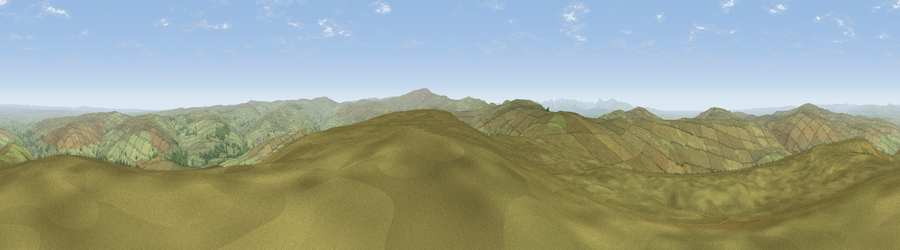

Grey Nag
#2359 in England · top 3% of its area beats it · near SlaggyfordThe view, rendered

A 360° render of this exact spot computed from the terrain model, tree cover and land cover — summer colours, afternoon light, calibrated against photographs of famous viewpoints. Real trees, hedges and buildings will differ in detail.
The panorama
Grey silhouette: terrain skyline in each direction (720 bearings, Earth curvature and refraction included). Dashed green: skyline with trees (+15 m) and buildings (+8 m) as obstacles. Blue strip: how far the ground is visible on each bearing.
Where the view opens
Wedge length = distance to the farthest visible ground on that bearing (vegetation-aware). Rings at 10, 25 and 50 km.
What fills the view
96% grassland · 4% woodland
Angular shares of the visible panorama (visual magnitude), not map area. Landscape diversity 0.09 (0–1 Shannon).
Key numbers
More beautiful places nearby
The staircase of upgrades: each row has a higher view potential than everything closer. Driving times are estimates from straight-line distance, calibrated against real road routing — check an actual route before setting out.
| Place | Direction | Drive | Score |
|---|---|---|---|
| Viewpoint near Renwick | SSW · 4 km | ~10 min | 77.0 |
| Viewpoint near Cumrew | W · 8 km | ~16 min | 77.2 |
| Viewpoint near Melmerby | S · 9 km | ~18 min | 78.1 |
| Viewpoint near Cumrew | WNW · 11 km | ~22 min | 78.8 |
| Barrock Fell | W · 20 km | ~33 min | 81.1 |
| Viewpoint near Watermillock | SW · 33 km | ~51 min | 82.6 |
| Viewpoint near Watermillock | SW · 34 km | ~52 min | 83.5 |
| Skiddaw South Top | WSW · 44 km | ~65 min | 85.8 |
54.82245, -2.52330 · source: osm peak · position refined by local search. Computed location — check access rights before visiting.